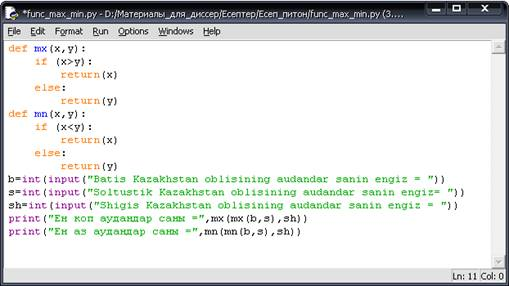

Ішкі программаларды құру және оларды қолдану
1-мысал. Батыс
Қазақстан облысының аудандар санын, Солтүстүк Қазақстан облысының аудандар санын және Шығыс Қазақстан облысының
аудандар санын енгізейік. Осы үш облыстың аудандарының санының ең көбін және ең
азын функцияны пайдалана отырып шығаратын программа құрайық.
Python программалау тілінде max мен min табудың екі жолын
көрсетейік.
1-жолы: дайын функцияның
көмегімен:
|
Python программалау тіліндегі программа коды |
|
b=int(input("Batis Kazakhstan oblisining audandar sanin engiz =
")) s=int(input("Soltustik Kazakhstan oblisining audandar sanin
engiz= ")) sh=int(input("Shigis Kazakhstan oblisining audandar sanin engiz =
")) print("Ен коп аудандар саны =",max(max(b,s),sh)) print("Ен аз аудандар саны =",min(min(b,s),sh)) |
2-жолы: Процедуралар мен
функцияның көмегімен:
|
Python программалау тіліндегі программа коды |
|
def mx(x,y): if (x>y): return(x) else: return(y) def mn(x,y): if (x<y): return(x) else: return(y) b=int(input("Batis Kazakhstan oblisining audandar sanin engiz =
")) s=int(input("Soltustik Kazakhstan oblisining audandar sanin
engiz= ")) sh=int(input("Shigis Kazakhstan oblisining audandar sanin engiz =
")) print("Ен коп аудандар саны =",mx(mx(b,s),sh)) print("Ен аз аудандар саны =",mn(mn(b,s),sh)) |
Есептің Python
программалау тілінде шығару жолы 1, 2 – суреттерде көрсетілген.

Сурет 1 - Ең көп және ең аз аудандардың санын табу

Сурет 2 - Алынған нәтиже
Осы есептің С++ программалау
тіліндегі программа коды 3, 4 - суреттерде
берілген.
|
|
С++ программалау тіліндегі программа коды |
|
1 2 3 4 5 6 7 8 9 10 11 12 13 14 15 16 17 18 19 20 21 22 23 |
#include
<iostream> using namespace std; float mx(float a, float
b) {if (a>b) return(a); else
return(b);} float mn(float a, float
b) {if (a<b) return(a); else
return(b);} int main(int argc,
char** argv) { int b,s,sh,max,min,k,l; cout<<"Batis
Kazakhstan oblisining audandar sanin engiz = "; cin>>b; cout<<"\n
Soltustik Kazakhstan oblisining audandar sanin engiz="; cin>>s; cout<<"\n
Shigis Kazakhstan oblisining audandar sanin engiz = "; cin>>sh; k=mx(b,s); max=mx(k,sh); cout<<"\n En
kop audandar sani ="<<max; l=mn(b,s); min=mn(l,sh); cout<<"\n\n
En az audandar sani ="<<min; system("pause");} |

Сурет 3 - С++ программалау
тілінде функцияны пайдалана отырып, ең көп және ең аз аудандардың санын табу

Сурет 4- Алынған нәтиже
 2-мысал. Нұрсұлтан қаласының солтүстік
жағасындағы үш үйде орта есеппен 700, 800, 900 адам тұрады. Биіктігі
орташа 1 ағаш 3 адамды оттегімен қамтамасыз етеді. Функцияны пайдалана отырып,
осы үйлердің барлық тұрғындарын оттегімен қамтамасыз ету үшін қанша ағаш егу
керек екенін есептейтін программа құрайық.
2-мысал. Нұрсұлтан қаласының солтүстік
жағасындағы үш үйде орта есеппен 700, 800, 900 адам тұрады. Биіктігі
орташа 1 ағаш 3 адамды оттегімен қамтамасыз етеді. Функцияны пайдалана отырып,
осы үйлердің барлық тұрғындарын оттегімен қамтамасыз ету үшін қанша ағаш егу
керек екенін есептейтін программа құрайық.
Есептің Python программалау
тіліндегі программа коды 5, 6 -суреттерде берілген.
|
Python программалау тіліндегі программа коды |
|
def ag(adam): a=3 agash=adam/a return(round(agash)) u1=int(input("1 uidegi adamdar sanin engiz = ")) u2=int(input("2= uidegi adamdar sanin engiz = ")) u3=int(input("3 = uidegi adamdar sanin engiz = ")) print("1 uidegi adamdarga = ",ag(u1),"agash
kazhet") print("2 uidegi adamdarga = =",ag(u2),"agash
kazhet") print("3 uidegi adamdarga = =",ag(u3),"agash
kazhet") |

Сурет 5 - Функцияны пайдалана отырып, ағаш санын есептеу

Сурет 6- Алынған нәтиже
Есептің С++ программалау тіліндегі программа коды 7, 8 -суреттерде берілген.
|
|
С++ программалау тіліндегі программа коды |
|
1 2 3 4 5 6 7 8 9 10 11 12 13 14 15 16 17 18 19 20 21 22 23 |
#include
<iostream> #include
<math.h> using namespace
std; float ag(float
adam) { int a=3; float agash; agash=round(adam/a); cout<<agash; } int main(int
argc, char** argv) { float x,y,z,l,k,m; cout<<"1-uidegi adamdar sanin
engiz ="; cin>>x; cout<<"2-uidegi adamdar sanin
engiz ="; cin>>y; cout<<"3-uidegi adamdar sanin
engiz ="; cin>>z; l=ag(x); cout<<" agash kazhet 1-uidegi
adamdarga \n"; k=ag(y); cout<<" agash kazhet 2-uidegi
adamdarga \n"; m=ag(z); cout<<" agash kazhet 3-uidegi
adamdarga \n"; system("pause"); } |

Сурет 7 - C++ программалау
тілінде функцияны пайдалана отырып, ағаш санын есептеу

Сурет 8 - Алынған нәтиже
 3-мысал. Банктегі жылдық өсімі 15
пайыздық болатын үш адамның K теңгесі салынды. Функцияны пайдалана отырып, N
жылдан кейін әр адам әр жылда қанша пайда табатынын программа құрайық.
3-мысал. Банктегі жылдық өсімі 15
пайыздық болатын үш адамның K теңгесі салынды. Функцияны пайдалана отырып, N
жылдан кейін әр адам әр жылда қанша пайда табатынын программа құрайық.
Есептің Python программалау
тіліндегі программа коды 9, 10 - суреттерде берілген.
|
Python программалау тіліндегі программа коды |
|
def dep(k,n): i=0 s=0
k=k*15/100 while
i<n:
s+=k
i=i+1
print(i,"-jilda barligi=",s," tenge paida") print("Depozitti esepteu, jildik
osomi-15%") k1=int(input("1 adamnin summasin
engiz=")) n1=int(input("Jilin engiz=")) print(dep(k1,n1)) k2=int(input("2 adamnin summasin
engiz=")) n2=int(input("Jilin engiz=")) print(dep(k2,n2)) k3=int(input("3 adamnin summasin
engiz=")) n3=int(input("Jilin engiz=")) print(dep(k3,n3)) |

Сурет 9 - Депозиттің өсімін есептеу

Сурет 10 - Алынған нәтиже
Есептің С++ программалау тіліндегі программа коды 11, 12 -суреттерде берілген.
|
|
С++ программалау тіліндегі программа коды |
|
1 2 3 4 5 6 7 8 9 10 11 12 13 14 15 16 17 18 19 20 21 22 23 24 25 26 27 28 29 30 31 32 |
#include <iostream> #include <math.h> using namespace std; float dep(float k,int n) {int i=0; float s=0; k=k*15/100; while (i<n)
{s+=k; i++; cout<<i<<"-jilda
barligi="<<s<<" tenge paida \n\n";} } int main(int argc, char** argv) { float
k1,n1,k2,n2,k3,n3; cout <<"Depozitti esepteu, jildik
osomi-15% \n"; cout<<"1 adamning summasin
engiz="; cin>>k1; cout<<"Jilin engiz="; cin>>n1; dep(k1,n1); cout<<"2 adamning summasin
engiz="; cin>>k2; cout<<"Jilin engiz="; cin>>n2; dep(k2,n2); cout<<"3 adamning summasin
engiz="; cin>>k3; cout<<"Jilin engiz="; cin>>n3; dep(k3,n3); system("pause"); } |

Сурет 11 - C++ программалау тілінде депозиттің өсімін есептеу

Сурет 12 - Алынған нәтиже
 4-мысал. 2 aткорада n
жайдан бар. Әрбір жайда бір аттан тұр. Аттардың кейбіреуі шабысқа мінетін
аттар, кейбіреуі салтанатқа мінетін аттар. Функияны пайдалана отырып, әрбір
қорада қанша шабысқа мінетін аттар және қанша салтанатқа мінетін аттар бар
екенін есептейтін программа құрайық.
4-мысал. 2 aткорада n
жайдан бар. Әрбір жайда бір аттан тұр. Аттардың кейбіреуі шабысқа мінетін
аттар, кейбіреуі салтанатқа мінетін аттар. Функияны пайдалана отырып, әрбір
қорада қанша шабысқа мінетін аттар және қанша салтанатқа мінетін аттар бар
екенін есептейтін программа құрайық.
Нұсқаулық. Шабысқа
мінетін аттарды 1(оң сан) деп енгізіп, ал салтанатқа мінетін аттарды -1(теріс
сан) деп енгізейік.
Есептің Python программалау тіліндегі программа коды 13, 14 -суреттерде
берілген.
|
Python программалау тіліндегі программа коды |
|
def attar(n):
print("Шабыска жане салтанатка мінетін аттардын санын
есептеу") n1=0 n2=0
a=[int(input()) for i in range(n)] for i
in a:
if i>0:
n1+=1
else: n2+=1
print('Шабыска мінетін аттардын саны=',n1)
print('Салтанатка мінетін аттардын саны=',n2) print("1-корадагы жайлардын санын еніз =
") k1=int(input()) attar(k1) print("2-корадагы жайлардын санын еніз =
") k2=int(input()) attar(k2) |

Сурет 13 - Екі қорадағы шабысқа және салтанатқа мінетін аттардың санын
есептеу

Сурет 14 - Алынған нәтиже
Есептің С++ программалау тіліндегі программа коды 15, 16 -суреттерде берілген.
|
|
С++
программалау тіліндегі программа коды |
|
1 2 3 4 5 6 7 8 9 10 11 12 13 14 15 16 17 18 19 20 21 22 23 24 25 |
#include <iostream> using namespace std;
int attar(int n)
{
int i, n1=0,n2=0; int a[n];
cout<<"Shabiska zhane tabiska minetin attardi engiz
\n";
for (i=1; i<=n; i++)
cin>>a[i];
for (i=1; i<=n; i++) if ( a[i]>0)
n1+=1; else n2+=1;
cout<<"Shabiska minetin attarding
sani="<<n1<<"\n";
cout<<"Saltanatka minetin attarding
sani="<<n2<<"\n\n";} int main(int argc, char** argv) { int
k1,k2; cout<<"1 koradagi zhailarding
sanin engiz = "; cin>>k1; attar(k1); cout<<"\n\n2 koradagi zhailarding
sanin engiz = "; cin>>k2; attar(k2); system("pause"); } |

Сурет 15 - С++ программалау тілінде екі қорадағы шабысқа және салтанатқа
мінетін аттардың санын есептеу

Сурет 16 - Алынған нәтиже